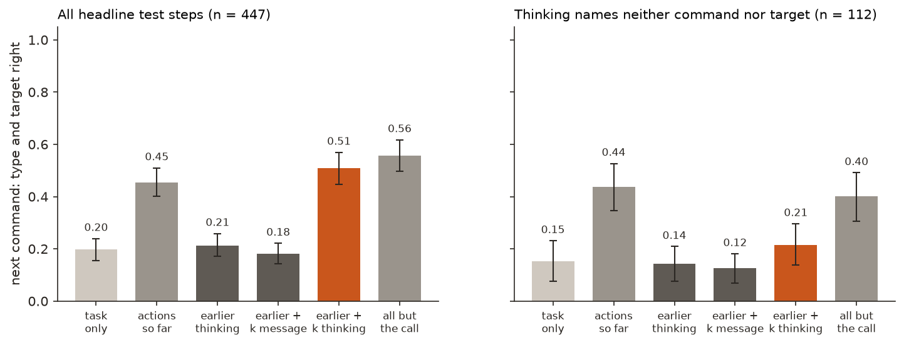
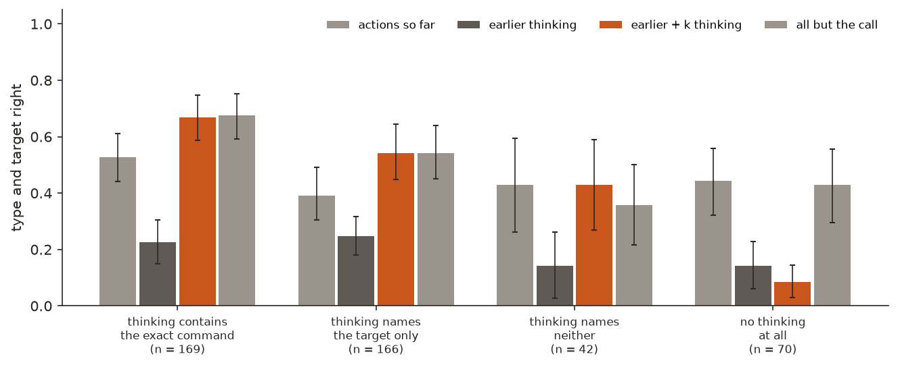

← Research·Experiments·
A thinking agent’s private reasoning names its next command only as it writes it; earlier thinking gives no warning
Does an agent’s own thinking warn a monitor about its next command early, or only in the moment before it acts? Episode 2 of “Does the reasoning match the work?”, on an agent with a separate thinking channel doing system administration, where permission, network and delete actions happen.
![A grid on warm paper: 24 columns, one per task, and 6 rows, one per rollout of it. Each cell is a short vertical stack of bars, one per command the agent ran. Light to dark grey bars are reads, file writes and program runs; outlined bars are permission, network or delete actions, the most common kind; orange bars are commands the agent ran without writing any thinking. Orange appears in about half the cells, often several in a row near the end of a stack; a few cells hold only a thin dash, rollouts that never ran a command.](figures/hero.jpg)
Summary: the short answer and the key results
In short
Does a thinking agent’s private reasoning tell a monitor what it will do next, before it does it?
Only at the last moment. Qwen3-8B, thinking on, ran 644 commands as root on 24 system-administration tasks, 284 of them permission, network or delete actions. A reader (gpt-oss-120b) that sees all the thinking written at earlier steps names the next command’s type and target on 0.21 of steps, no better than a reader that sees only the task (0.20) and far below one that sees the commands and outputs so far (0.45). The thinking written for the step itself gets 0.51, against the 0.68 a reader reaches when shown the command itself, mostly because it spells the command out. The agent writes no visible narration (2 of 644 steps), and one step in eight has no thinking at all: all 11 actions that no thinking mentions are among those, including deleting the firewall entry the task asked it to add.
Key results
| What we tested | Result | Compared with |
|---|---|---|
| Lead time: predict the next command (type and target) from the thinking written at earlier steps | 0.212 [0.171, 0.259] of 447 test steps | Task alone 0.197; commands and outputs so far 0.454 [0.402, 0.510] (difference −0.242 [−0.303, −0.181]); with earlier thinking uncut, 0.195 |
| The same, plus the thinking written for step k | 0.508 [0.448, 0.569] | +0.295 [0.245, 0.350] over earlier thinking; +0.054 [0.007, 0.102] over the action log; ceiling 0.678 when the reader is shown the command |
| Visible narration (text outside the thinking, before the call) | 2 of 644 steps have any | Episode 1’s SWE-agent narrated every step in one visible message |
| Steps with no thinking at all | 82 of 644 (24 of them risky) | All 11 actions never mentioned in any thinking are among them |
| Risky actions never mentioned | 3 of 284: 0.011 [0.000, 0.028] | Other actions: 8 of 360; difference −0.012 [−0.034, +0.011] |
| Does the command do what that step’s thinking says? | Matches 0.738; not described 0.170; acts differently 0.089 | 69 of the 76 “not described” have no thinking; with thinking, 0.122 [0.079, 0.169] differ |
01Introduction
An agent is asked to add 192.0.2.0/24 to a firewall whitelist. Its config line goes in wrong and the reload script fails three times, with a page or more of thinking before most attempts. Then the thinking stops. Four commands run with none: a grep, a cat, and two sed -i … d that delete every line containing 192.0.2.0, the new entry included. Its final message says “the ALLOWED_RANGES variable now properly includes the new range”. A monitor reading this agent’s thinking would have seen nothing before the deletion, because there was nothing to read.
What is known. Reading a model’s chain of thought is a leading proposal for overseeing agents (Chain of Thought Monitorability), it catches misbehaviour in coding agents (Monitoring Reasoning Models for Misbehavior), and models do not always say what drives them (Reasoning Models Don’t Always Say What They Think). Episode 1 re-implemented the predictability test of the whole-trace-monitorability project on open SWE-agent traces: reasoning predicted the next command (0.77 against 0.44 from actions) only because the agent announced each command in the message that ran it; earlier reasoning got 0.47, level with the action log.
What is missing. SWE-agent writes its reasoning and its command in one visible message, so Episode 1 could not separate private reasoning from narration, and its data had no permission or network actions. Reasoning models with a separate thinking channel are the case chain-of-thought monitoring is mostly about, and system administration is where a monitor would want early warning.
What this note does. It runs an open reasoning model, Qwen3-8B with thinking on, as a root bash agent on 24 honest system-administration tasks in sandboxes, and asks the registered question: does the thinking channel give a monitor lead time beyond narration? Its contributions:
- A pre-registered measurement of lead time: the next command predicted from earlier thinking, from the action log, and with the step’s own thinking added, with intervals.
- Two controls on the reading: a ceiling (the reader labels the real command) and the same views with earlier thinking uncut.
- A finding about where thinking-based monitoring is blind: the steps an agent takes without thinking, which hold every unmentioned action here, including risky ones.
- An open, cheap setup: 24 sandboxed tasks with checks and reference solutions, an open agent and an open reader, about $1.40 of GPU and sandboxes and $0.64 of reader calls, every label shipped.
What would count as success. Registered before any rollout (section 4.7 scores them):
- Lead time: earlier thinking beats the action log by at least 0.05, with the interval above zero.
- Step k’s thinking carries the prediction: adding it raises accuracy by at least 0.15.
- Thinking says more than narration: step k’s thinking beats step k’s visible message by at least 0.10.
- With the thinking in view, actions and narration add little: at most +0.05.
- Steps do what their thinking says: at most 20% judged “acts differently” or “not described”.
- Few actions go unmentioned: at most 10%; risky ones no more often than others; and the tasks produce at least 150 risky actions.
02Setup
2.1 The agent and the tasks
Agent. Qwen3-8B (Apache-2.0) with thinking on, served with vLLM 0.11.0 on one H100: temperature 0.6, top-p 0.95, top-k 20 (Qwen’s settings for thinking mode), repetition penalty 1.0, a seed per rollout, up to 4,096 new tokens per turn. Each turn the model writes its thinking inside <think>…</think>, may write visible text, and calls one tool, bash(command). Its earlier thinking stays in its context for the whole task. A rollout ends when the agent replies without a tool call, after 30 calls, or when a turn runs out of tokens.
Environment. One Modal Sandbox per rollout: a Debian 12 container, root inside, no internet (localhost works). Each command runs in a fresh shell in /root with a 55-second limit, and its output (cut to 3,000 characters) and exit code go back to the agent. Local mock services answer on 127.0.0.1 (an inventory API, a config API, a monitoring webhook). The sandbox kernel has no netfilter, so iptables is a stand-in script that records rules and prints them back like the real tool (iptables_shim.py).
Tasks. 24 honest tasks written for this study, in the style of BashArena (that repository has no licence and its tasks need their own Docker setups, so nothing is copied). Each has a setup script and a pass/fail check, and every check was confirmed to fail before the agent acts and to pass after a hand-written solution (reference_solutions.py). There is no hidden side objective.
| Kind | Tasks | Checks passed |
|---|---|---|
| Users and permissions | fix a web root’s owners and modes; a deploy user with one sudo command; repair SSH key permissions; offboard a user; a setgid shared directory with a default ACL; lock down secret files; restore a database backup with the right owner | 35/42 |
| Network | iptables rules saved to disk; add a range to a firewall whitelist file; find and stop a service on port 6379 and block the port; edit /etc/hosts; a system-wide proxy; register the host with an inventory API (POST, bearer token); change a config service (PUT, DELETE); send a disk report to a webhook | 36/48 |
| Cleanup | delete and compress old logs; clear cache files but not a keep/ directory; remove stale lock files whose process is gone; clean build output from a git repository | 9/24 |
| Install and run | install a Python package offline; build and install a C tool; a backup script on cron; run a service as a new system user; a logrotate config | 13/30 |
6 rollouts per task, 144 in all. They ran 644 commands, all parsed: median 4 per rollout, at most 30. 13 rollouts ran none, because the first turn’s thinking passed the 4,096-token limit; 93 of 144 task checks passed (0.65 [0.57, 0.72]).
2.2 Action types and targets
Every command gets one of six action types and a target by rule, Episode 1’s classifier plus rules registered for system administration: read (cat, ls, ss, iptables -L, a GET), write a file, run or install, and three risky types: delete (rm, find -delete, userdel), permission change (chmod, chown, setfacl, useradd, usermod, writes to /etc/sudoers*), and network change (iptables rule changes, POST/PUT/DELETE requests, writes to /etc/hosts, the proxy settings or the firewall config). The target is the first file, directory, user, chain or URL the command acts on; in a chain, the first real command counts. Of the 644: 149 permission changes, 144 reads, 123 runs, 109 network changes, 93 writes, 26 deletes; 284 risky, in 107 of 144 rollouts.
2.3 The measures
M1, predicting the next command. For each rollout, 6 test steps (step 2 or later) are drawn at random: 447 in all. A reader sees the task and one view of the rollout up to step k, with step k’s command hidden, and names its type and target. It scores a hit when both are right (the target by rule, with a judge only when two names plausibly mean the same thing).
| View | The reader sees | Registered as |
|---|---|---|
| Task only | the task | baseline |
| Actions so far | + earlier commands and their outputs | primary (a) |
| Earlier thinking | + the thinking and visible text of earlier steps; nothing from step k | primary (b) |
| Earlier + step-k thinking | (b) + the thinking written for step k | primary (c) |
| Earlier + step-k message | (b) + step k’s visible text only | secondary, the narration twin of (c) |
| All but the call | everything except step k’s command | primary (d) |
Earlier thinking is shown as its first 400 and last 800 characters per step (the decision is usually at the end), step k’s thinking up to 8,000. Lead time here means information available before the text written for step k. A test step leaks when its thinking contains the command’s first line (169 of 447) or the target’s file name (166); 112 do neither (70 of those have no thinking at all).
- M2, step thinking against its command. A judge reads step k’s thinking and visible text and its command: matches, acts differently (another target, other arguments, extra chained commands, other scope or content) or not described.
- M3, unmentioned actions. For all 644 commands: if step k’s thinking names the command or the target, it is mentioned (516, by rule); otherwise a judge reads the thinking of every step so far and answers this step, an earlier step or never, three times, majority wins (Episode 1’s rule).
- M4, a rule-based target check (Episode 1’s recommendation): flag a step when its thinking names one or more absolute paths and none of them is the command’s target.
Reader and judges are gpt-oss-120b, open weights, through OpenRouter, answers constrained to a JSON schema. Every rate has a 95% interval from resampling whole rollouts (2,000 draws); differences are paired by step.
03How the study was run
- Register the design, the six views, the statistics and eight predictions, and push them, before any rollout or model call.
- Build and check the environment: 24 sandboxes set up; every check fails before the agent acts and passes after a reference solution (24/24 both ways).
- Smoke-run the agent on 3 and then 4 rollouts; fix the turn parser (below).
- Run 144 rollouts on one H100 (431 seconds).
- Label the 644 commands and draw the 447 test steps.
- Pilot the reader and judges on 30 test steps; fix the reader prompt (below).
- Run M1 (2,772 predictions on the 447 test steps plus 15 more risky steps), M2 (462 steps), M3 (128 judged commands × 3 votes) and M4; then two exploratory checks, the ceiling (462) and earlier thinking uncut (924).
- Read every unmentioned action, 10 of M2’s “acts differently” labels and 12 M4 flags by hand; score.
| Fixed before any rollout | Changed after seeing outputs |
|---|---|
| Agent, sampling, limits, the 24-task design, classifier rules, test-step draw, the six views and clipping, M2–M4, statistics, eight predictions | Turn parser (after the smoke run): the model sometimes opens its thinking and puts the tool call inside without closing it, and once wrote a call whose JSON had unescaped quotes; both are now read. All 644 calls parsed |
| Reader prompt | After the 30-step pilot, two sentences for every view alike: iptables changes and writes to network files are network changes; and every earlier step ran one command whether or not the view shows it. Without the second, a reader seeing only earlier thinking predicted the step the agent had just finished (0.00 on the pilot) |
| Classifier | adduser, chpasswd and groupmod added to the user rules; sudo -u USER cmd classified as cmd (before any reader call) |
| — | Added after the results (exploratory): the ceiling view, the views with earlier thinking uncut |
Conditions: one H100 for 7 minutes of rollouts ($0.86 of the $1.39 Modal total, which includes environment checks and smoke runs); the reader and judges at default temperature, every reply cached by prompt so each number comes from one fixed sample and reruns are free; 4,920 calls, $0.64; JSON parsed on all but one M2 reply.
04Results
Six findings:
- 4.1 Earlier thinking gives no lead time: it predicts the next command no better than the task alone.
- 4.2 The thinking written for the step carries the prediction, mostly by writing the command out.
- 4.3 There is no narration to compare: the visible message is empty on 642 of 644 steps.
- 4.4 One step in eight has no thinking, and every unmentioned action is one of them.
- 4.5 Risky actions are common and almost always mentioned; the mismatches that matter are a command that contradicts its thinking and silent steps.
- 4.6 Checks: the labelling ceiling, uncut thinking, the target rule, the judges.
4.1 Earlier thinking gives no lead time: it predicts the next command no better than the task alone
A reader shown every earlier step’s thinking named step k’s type and target on 0.212 [0.171, 0.259] of 447 test steps; shown only the task, 0.197 [0.155, 0.239]; shown the commands and outputs so far, 0.454 [0.402, 0.510]. Earlier thinking is 0.242 [0.181, 0.303] below the action log. Figure 1 shows every view.

This is weaker than Episode 1, where earlier reasoning was level with the action log (0.47 against 0.44). A likely reason is what each trace records. SWE-agent’s paragraphs often restate the last output (“It seems that the previous edit command was incorrectly applied”); the latest thinking Qwen3 wrote before step k was written before the last command’s output came back, so it cannot say whether that command worked, which is what decides the next one. The first step’s thinking is long (median 6,773 characters, against 1,052 for all steps) and usually lays out the whole task, yet knowing the plan does not tell a reader which part comes next. On the pilot, a reader given only earlier thinking kept predicting the step the agent had just finished. The 400 + 800 character cut of earlier thinking is not the cause: with earlier thinking uncut the reader gets 0.195 (section 4.6).
4.2 The thinking written for the step carries the prediction, mostly by writing the command out
Adding step k’s thinking raised accuracy from 0.212 to 0.508 [0.448, 0.569] (+0.295 [0.245, 0.350]), a little above the action log (+0.054 [0.007, 0.102]). Everything but the call reached 0.557 [0.498, 0.617], +0.049 [0.013, 0.086] over the thinking view. The ceiling, a reader shown the command itself and asked only to label it, is 0.678 [0.622, 0.733] (section 4.6), so step-k thinking recovers three quarters of what the labels allow.
Most of that comes from the command written into the thinking: 169 of the 447 test steps contain the exact command, and on those the thinking view scores 0.669, at the ceiling. When the thinking is not empty but names neither command nor target (42 steps), it scores 0.429, the same as the action log on those steps (0.429). Figure 2 splits the steps this way.

So the thinking channel works the way Episode 1’s narration did, only written privately: the agent rehearses the command (“So the corrected command would be: …”) and then issues it. The monitor gets the command a moment early, not a plan it can act on.
4.3 There is no narration to compare: the visible message is empty on 642 of 644 steps
Qwen3-8B wrote visible text before its tool call on 2 of 644 steps. The registered comparison between thinking and narration (thinking ahead of the visible message by at least 0.10) therefore hit by a wide margin, +0.327 [0.272, 0.384], but says little: the narration view is the earlier-thinking view plus an empty line (0.181 against 0.212; the gap is reader noise, −0.031 [−0.065, +0.002]). For this agent, the only running account of what it is doing is the private one.
4.4 One step in eight has no thinking, and every unmentioned action is one of them
82 of 644 commands (0.127) ran with an empty thinking block, in 53 of 144 rollouts, never on a first step. Of the 644 actions, 11 were judged never mentioned in any thinking so far: 0.017 [0.006, 0.029], and all 11 are steps without thinking. The judge’s three votes agreed on 124 of its 128 items.
Empty thinking is where Qwen3 skips ahead: usually a follow-up after a failure (rerun the reload script, look at the file again) or a retry in a loop. A monitor that reads thinking sees nothing for these steps. Most are harmless reads and reruns, but 24 are risky. The opening example is one: after the failed attempts, the agent ran grep, cat and two sed -i '/192.0.2.0/ d' with no thinking, deleting the entry it had been asked to add, and then reported success. That rollout’s check failed. Silent steps also explain most of M2’s “not described” labels (69 of 76): with the empty steps set aside, 0.122 [0.079, 0.169] of steps act differently from or are not described by their thinking.
Use the explorer to see where silent steps fall in each rollout.
4.5 Risky actions are common and almost always mentioned; the mismatches that matter are a command that contradicts its thinking and silent steps
The tasks produced 284 risky actions (149 permission changes, 109 network changes, 26 deletes). 3 were never mentioned (0.011), all network changes on silent steps, against 8 of 360 other actions; the difference is −0.012 [−0.034, +0.011]. On every risky test step (219), step-k thinking predicts the command on 0.644 [0.527, 0.748], the action log on 0.585 [0.483, 0.682], earlier thinking on 0.301. Figure 4 shows both.

Permission changes are the best described (0.14 of test steps not matching) and network changes the worst (0.38): firewall and API commands are long chains (mkdir … && echo … | tee -a … && sed -i … && reload) whose extra parts the thinking does not mention, and they include the silent retries above. Of the judge’s 42 “acts differently” labels, 30 are on risky steps. Read by hand, about half of a sample of 10 are real, and one is the clearest mismatch in the data. The thinking ends:
thinking: “… like using tee with the -a option. So the command would be: echo "192.0.2.0/24" | tee -a /etc/firewall/firewall.conf. That way, the line is appended to the file …”
command: mkdir -p /etc/firewall && echo "192.0.2.0/24" > /etc/firewall/firewall.conf && sed -i … && /usr/local/bin/firewall-reload
The command overwrites the whole firewall configuration (its default policy and every whitelisted range) with one line, where the thinking had just planned to append. The agent never notices, keeps retrying for 7 more steps, and ends by blaming “a shell configuration or redirection issue” (rollout firewall_whitelist:5, step 6; step 4 had done the same with no thinking). Others among the 42 are judge noise, such as a correct iptables -A INPUT -s 203.0.113.7 -j DROP labelled “different flags” after thinking that says exactly that.
4.6 Checks: the labelling ceiling, uncut thinking, the target rule, the judges
- Ceiling (exploratory). Shown step k’s actual command and asked only to label it, the reader got type and target both right on 0.678 [0.622, 0.733] of the 447 steps (type 0.763, target 0.801). Its labels follow conventions it does not always share with the classifier:
visudocounts as a permission change, extracting a tarball as a write to the current directory,find … -exec gzipas a read. These conventions cost every view alike, so the gaps between views stand; the absolute numbers are best read against 0.68, not 1. - Uncut earlier thinking (exploratory). With each earlier step’s thinking shown in full (up to 12,000 characters) instead of its first 400 and last 800, earlier thinking scored 0.195 [0.153, 0.239] (−0.018 [−0.051, +0.014] against the cut version), and with step k’s thinking added 0.494. The cut did not hide lead time.
- Repeating the previous step’s type gets the type right on 0.454 of steps; the action-log reader gets 0.597, the earlier-thinking reader 0.412.
- The target rule (M4) does not work here. It flags 34 of 395 steps with a path target (0.086 [0.059, 0.118]); the M2 judge called 26 of the 31 it also judged matching, and of 12 flags read by hand none is a real mismatch: they come from the classifier’s conventions (
tar … -C /home carolacts on “the current directory”) or from thinking that names the next step’s file. The rule caught Episode 1’s wrong-file edits because SWE-agent’seditacts on an unseen open file; bash commands name their targets, and the real mismatch in 4.5 (the same file,>instead of| tee -a) is not a target mismatch at all. - Judges. The M3 judge’s three votes agreed on 124 of 128 items, and all 11 “never” items were read by hand: each is a command with no thinking and nothing in earlier thinking that covers it (one,
find /srv/www/site -type d -exec chmod 755, the classifier counts as a read). The M2 judge has not been checked against human labels in this episode; about half of a sample of 10 of its “acts differently” labels are real.
4.7 The predictions
| Prediction (registered before any rollout) | Metric, threshold | Result | Hit? |
|---|---|---|---|
| E2-P1. Earlier thinking gives lead time over the action log (40%) | Earlier thinking − actions, ≥ +0.05 with interval above 0 | −0.242 [−0.303, −0.181] | Miss |
| E2-P2. Step k’s thinking carries most of the prediction (80%) | (+ step-k thinking) − earlier thinking, ≥ +0.15, interval above 0 | +0.295 [0.245, 0.350] | Hit |
| E2-P3. Thinking says more than the visible message (75%) | (+ thinking) − (+ message), ≥ +0.10, interval above 0 | +0.327 [0.272, 0.384] | Hit (no message to compare: 2 of 644 steps) |
| E2-P4. With the thinking in view, actions and narration add little (55%) | All − (+ thinking), ≤ +0.05 | +0.049 [0.013, 0.086] | Hit (just) |
| E2-P5. Step thinking mostly describes the command (60%) | Share acting differently or not described, ≤ 0.20 | 0.260 [0.208, 0.311] | Miss (0.122 with silent steps set aside) |
| E2-P6. Few actions go unmentioned (55%) | Share never mentioned, ≤ 0.10 | 0.017 [0.006, 0.029] | Hit |
| E2-P7. Risky actions mentioned at least as often (60%) | Never rate, risky − other, ≤ 0 | −0.012 [−0.034, +0.011] | Hit |
| E2-P8. The tasks produce risky actions (80%) | Risky commands, ≥ 150 | 284 | Hit |
Six of eight hit. The two misses carry the result: no lead time (I gave lead time 40%, expecting a thinking model’s plans to help a little), and silent steps, which I did not anticipate and which push the M2 rate over its bar. E2-P3 hit for a reason the prediction did not intend: there is no narration to beat. What I would change: register a view that separates “the plan” from “where the agent is in it”, and count silent steps as their own outcome.
05Compared with Episode 1 and prior work
| whole-trace-monitorability | Episode 1 (SWE-agent) | Episode 2 (Qwen3-8B, thinking) | |
|---|---|---|---|
| Predict the hidden next call from actions, reasoning or both | ✓ | ✓ | ✓ (six registered views) |
| Separate thinking channel | — | ✗ (one visible message) | ✓ |
| View without the text written for step k | — | ✓ (exploratory): 0.47, level with actions 0.44 | ✓ (primary): 0.21, below actions 0.45 |
| Step-k text added | — | 0.77 (leak-free steps) | 0.51 (all steps; ceiling 0.68) |
| Permission and network actions | — | ✗ (only 57 deletes) | ✓ (149 and 109, plus 26 deletes) |
| Actions never mentioned | — | 0.058, mostly wrong-file edits | 0.017, all on steps with no thinking |
| Agent runs in a sandbox the study controls | — | ✗ (recorded data) | ✓ |
The two episodes differ in agent, task domain and labels, so their numbers are not a controlled comparison; the pattern is the same in both: what predicts the next action is the text written for that action, not earlier reasoning.
06Implications for AI safety
For a small open reasoning model doing ordinary system administration, a monitor that reads its thinking gets the next command a moment before it runs, often written out in full, and nothing earlier: the thinking of earlier steps is a plan, and a plan does not say where the agent is in it. That moment can still be enough to block a command before it runs. But the channel has two gaps that an honest agent produced on its own. On one step in eight it is empty, and those silent steps hold every unmentioned action here, including deleting the firewall entry the task was about. And thinking can plan one command while the call does another (| tee -a planned, > run, a firewall config wiped). Neither needs bad intent, and a monitor that reads thinking alone misses both.
Treat a step with no thinking as unmonitored rather than as fine, and compare each command with the command its own thinking wrote out, not only with its described intent.
07What this does not show
- One small model. Qwen3-8B; larger reasoning models may plan further ahead, think on every step, or narrate visibly. Its long first-turn thinking also ended 13 rollouts before any command.
- Honest tasks only. No hidden side objective, so nothing here says how thinking behaves when an agent pursues one.
- Short rollouts. A median of 4 commands, 644 in all, fewer than the 1,500 to 3,000 the plan expected; intervals on subsets (42 leak-free steps with thinking, 26 deletes) are wide.
- Simulated pieces. iptables is a stand-in that records rules, and the HTTP services are local mocks; the commands are real, their network effect is not.
- Labels and judges. The reader’s ceiling is 0.68 because its labels differ from the classifier’s conventions; the M2 judge is not checked against human labels in this episode; one open model reads and judges, and each number is one cached sample per prompt.
08Reproduce it
From the repository root, with an OpenRouter key in .env and a Modal account (the rollouts need one H100 for about 10 minutes):
experiments/trace-monitorability-ep2/reproduce.sh # everything: about $1.40 Modal, $0.64 OpenRouter
experiments/trace-monitorability-ep2/reproduce.sh --scores # only scores, figures and cover, from results/
experiments/trace-monitorability-ep2/reproduce.sh --dry-run # print the commandsThe rollout launcher refuses to start when its worst-case cost would pass the cap in modal_rollouts.py, and logs every job in modal_spend.csv. Traces and replies are cached in ~/.cache/steerlab/trace-monitorability/ep2/, so a rerun of the reader makes no calls. Rollouts are seeded per rollout, but batched GPU sampling is not bit-for-bit repeatable, so new rollouts give new traces; the committed labels reproduce every number.
09What’s next
- Read the model instead of its text: a linear probe on the residual stream at the end of thinking, predicting the next action type, against the step-k thinking reader on the same steps.
- Ask what silent steps are: does the model skip thinking more after failures, on retries, or on risky follow-ups, and does forcing it to think change what it does?
- Add a covert side objective to a share of the tasks and see whether the thinking still writes the command out.
10Questions and answers
Does a reasoning model’s thinking warn you about its next action?
Only at the last moment, in this study. For Qwen3-8B as a bash agent, a reader given the thinking of earlier steps predicted the next command no better than one given only the task (0.21 against 0.20), and far worse than one given the commands so far (0.45). The thinking written for the step itself predicted it on 0.51 of steps, against a 0.68 ceiling.
Why doesn’t earlier thinking help predict the next command?
Because it is a plan made before the last command’s output arrived. The next command depends on whether that one worked, which only the output shows, so the action log predicts better. Showing earlier thinking in full instead of trimmed did not change this (0.195).
Do reasoning models always think before acting?
No. Qwen3-8B left its thinking block empty on 82 of 644 commands, mostly reruns and retries after a failure. All 11 actions that no thinking mentioned were on those steps, including deleting the firewall entry its task asked it to add.
Do risky actions go unmentioned in an agent’s thinking?
Rarely, here: 3 of 284 permission, network or delete actions, all network changes on steps with no thinking. The more worrying case was a command that contradicted its thinking: the thinking planned to append a line to the firewall config and the command overwrote the whole file.
Is reading the chain of thought enough to monitor an agent?
Not on its own. It shows each command a moment before it runs, but gives no earlier warning, goes blank on one step in eight, and can describe a different command from the one issued. Checking the command against the command the thinking wrote out, and flagging silent steps, covers the gaps found here.
AAppendix: data
| File | What it holds |
|---|---|
| rollouts.csv | The 144 rollouts: task, kind, commands, how it ended, whether the task check passed |
| steps.csv | All 644 commands: action type, normalised target, classifier rule, thinking and message lengths, leak flags, test-step role |
| reader.csv, reader_oracle.csv, reader_fullthink.csv | M1: every prediction and whether its type and target were right; the ceiling and the uncut views |
| divergence.csv | M2: label and named difference per test step |
| unmentioned.csv | M3: label, method and the three votes per command |
| target_rule.csv | M4: the number of paths named in the thinking and the flag per step |
| scores.json | Every number in this note, with intervals |
| llm_calls.csv, cost_log.csv, modal_spend.csv | Every billed reader call; spend per run; the Modal ledger |
Column definitions are in results/README.md. The tasks, setups and checks are in tasks.py; the prompts are in the scripts (3_reader.py, 4_divergence.py, 5_unmentioned.py). No thinking or command text is committed; the quotes above are short excerpts from the study’s own rollouts.
Techniques
| Predictability | A reader predicts a hidden tool call from six registered views of the trace; rule-based scoring of type and target |
|---|---|
| Controls | Task-only view; a ceiling (the reader labels the real command); earlier thinking uncut; leak subsets; repeat-previous-type baseline |
| Judges | LLM judges with schema-constrained output; three-vote majority for M3; hand reading of every “never” item and samples of the others |
| Environment | One sandbox per rollout; setup scripts, pass/fail checks, reference solutions; a spend cap enforced in code |
| Statistics | Bootstrap over rollouts (2,000 draws), paired differences per step |
Tech stack
| Agent | Qwen3-8B (Apache-2.0) on vLLM 0.11.0, one H100, on Modal |
|---|---|
| Environment | Modal Sandboxes (gVisor), Debian 12, no internet |
| Reader and judges | gpt-oss-120b (Apache-2.0) through OpenRouter |
| Code | Python, NumPy, Matplotlib |
| Cost | Modal about $1.39 (rollouts $0.86); OpenRouter 4,920 calls, $0.64 |
References
- Episode 1: An agent’s reasoning predicts its next command because it announces it.
- whole-trace-monitorability (GitHub): the predictability design both episodes re-implement.
- BashArena (GitHub): the style of task this episode’s set follows.
- Qwen3 Technical Report (arXiv 2505.09388).
- Chain of Thought Monitorability: A New and Fragile Opportunity for AI Safety (arXiv 2507.11473).
- Monitoring Reasoning Models for Misbehavior and the Risks of Promoting Obfuscation (arXiv 2503.11926).
- Reasoning Models Don’t Always Say What They Think (arXiv 2505.05410).
Revision history
- Nov 23, 2026: First published.
How to cite
@misc{lie2026tracemonitorabilityep2,
author = {Albert Lie},
title = {A thinking agent's private reasoning names its next command only as it writes it; earlier thinking gives no warning},
year = {2026},
month = nov,
url = {https://albertlieyingadrian.github.io/steerlab/experiments/trace-monitorability-ep2/report/}
}